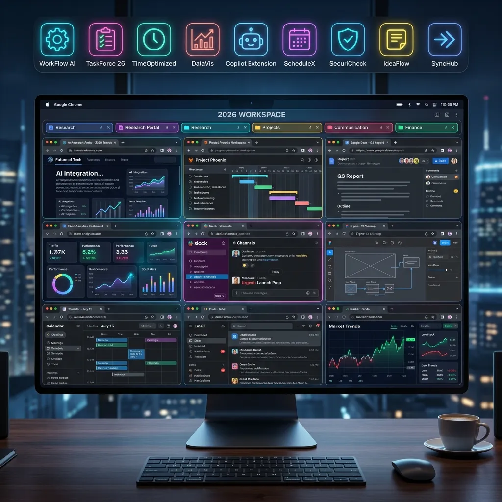

Top 10 Chrome Extensions for Video Multitasking and High-Performance Productivity

In the digital landscape of 2026, the web browser is no longer just a portal for reading text; it is a sophisticated multitasking engine. For power users, creators, and researchers, the ability to manage a multi youtube and process information at high velocity is a competitive necessity. While platforms like YoutubeMulti provide the infrastructure for multi-stream viewing, the right Chrome extensions act as the precision tools that sharpen your productivity. In this guide, we break down the top 10 extensions that every high-performance multitasker needs.
1. Video Speed Controller: Mastering Time
Time is the one resource you cannot buy. When you are monitoring dozens of streams, the Video Speed Controller extension is indispensable. It allows you to use keyboard shortcuts to increase or decrease video playback speeds by increments as small as 0.1x. This is critical for breezing through slow introductory segments in market analysis videos or slowing down complex technical tutorials across all your grid cells simultaneously. It works on almost any HTML5 video, making it a universal tool for your dashboard.
2. Dark Reader: Eye Protection for the Night Owl
A "wall of video" can be incredibly bright. If you are monitoring global news or crypto markets late into the night, the glare can lead to significant eye strain. Dark Reader is the industry standard for converting any website into a high-contrast dark mode. Unlike basic filters, it intelligently adjusts colors and brightness to maintain readability while protecting your vision. It is a mandatory addition to any high-intensity 2026 creator workstation.
3. uBlock Origin: Efficiency Through Elimination
Speed is as much about what you *don't* load as what you do. uBlock Origin is more than just an ad-blocker; it is a wide-spectrum content blocker that prevents intrusive scripts, tracking pixels, and heavy media overlays from bogging down your browser. When you are running a 5x5 video grid, you need every cycle of your CPU focused on video decoding. uBlock Origin ensures that "phantom" scripts aren't stealing your system resources in the background.
4. Picture-in-Picture (by Google): The Floating Focus
Sometimes, even a 50-video grid isn't enough. You might need to switch to your email or a document while still keeping a "primary" stream in view. Google's official Picture-in-Picture extension allows you to float any video in a small, resizable window that stays on top of other applications. It is the perfect companion to YoutubeMulti, allowing you to "detach" the most critical feed from your dashboard and follow you across your entire OS.
5. The Great Suspender (Modern Edition): Memory Management
Even with 64GB of RAM, high-velocity multitasking can hit a wall. The Great Suspender intelligently "park" tabs that you haven't used in a while, freeing up the memory they consume. For video multitaskers, this is useful when you have secondary research tabs open alongside your main monitoring grid. It ensures that your active video playback doesn't stutter because of a "memory leak" in a tab you haven't checked since yesterday.
6. Session Buddy: Workspace Persistence
Setting up the perfect YouTube multi-viewer dashboard takes time. You might have 20 specific URLs, 3 news feeds, and 5 social media monitors exactly where you want them. Session Buddy allows you to save these complex workspaces and restore them with a single click. It is an essential tool for project-based researchers who need to switch between different "monitoring configurations" throughout the day.
7. Volume Master: Audio Granularity
Managing audio across multiple streams is the ultimate challenge of multitasking. Volume Master allows you to boost the volume of a single tab by up to 600% or precisely lower it to a faint background hum. When you load a video wall in YoutubeMulti, you can use Volume Master to ensure that your "Focus Stream" is crisp and clear while keep the ambient "Buzz" of other rooms at a manageable level.
8. ColorZilla: For the Creative Auditor
If you are using video grids for ad campaign testing or creative auditing, you need to ensure brand consistency. ColorZilla allows you to pick any color from a running video stream and get the exact CSS or RGB code. This is invaluable for verifying that your localized ad creative matches your global brand guidelines across every cell in your grid.
9. OneTab: Decluttering the Mind
Multitasking often leads to "Tab Overload"—the psychological weight of having 50 icons at the top of your screen. OneTab collapses all your open tabs into a single list, reducing browser memory usage by up to 95% and, more importantly, reducing your cognitive load. You can then selectively restore only the tabs you need for your current "Focus Session" in your multi-video dashboard.
10. Momentum: The Productivity Anchor
In a world of constant stimulation, losing focus is easy. Momentum replaces your "New Tab" page with a personal dashboard featuring a beautiful landscape, a "Focus of the Day" prompt, and your to-do list. It serves as a psychological "Reset" button. Before you dive back into your wall of information, Momentum gives you a moment of calm to ensure you are focusing on the right priorities.
Combining Extensions with YoutubeMulti
The true power of these tools is realized when they are integrated into a unified workflow. Imagine this setup: You use Session Buddy to launch your "Market Watch" dashboard. uBlock Origin ensures the feeds are clean. Dark Reader protects your eyes. You use Video Speed Controller to scan through analyst reports at 2x speed, and Volume Master to balance the audio of five simultaneous live feeds. This is the 2026 definition of a "Super-User."
Conclusion: Your Ultimate 2026 Workstation
Chrome extensions are the "Plugins" of your digital brain. By curating a list of tools that handle resource management, visual comfort, and playback control, you transform your browser from a simple viewer into a high-performance information ops center. Combined with the scaling power of YoutubeMulti, these extensions allow you to push the boundaries of what is possible in digital multitasking.